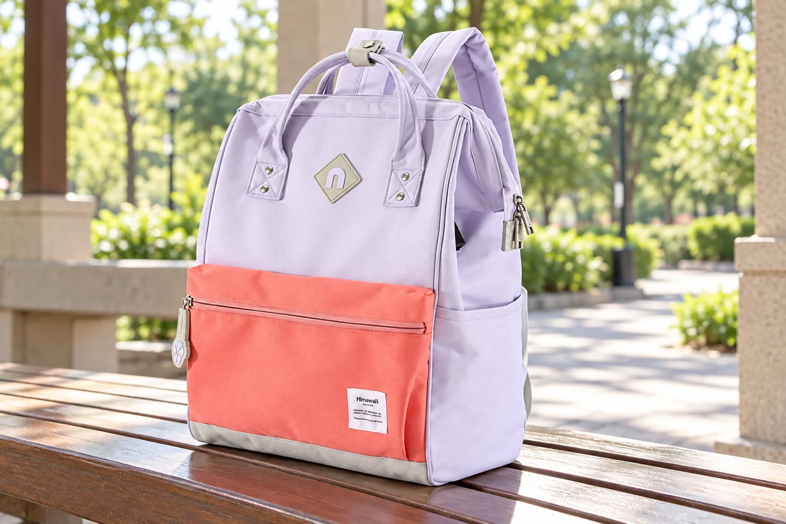
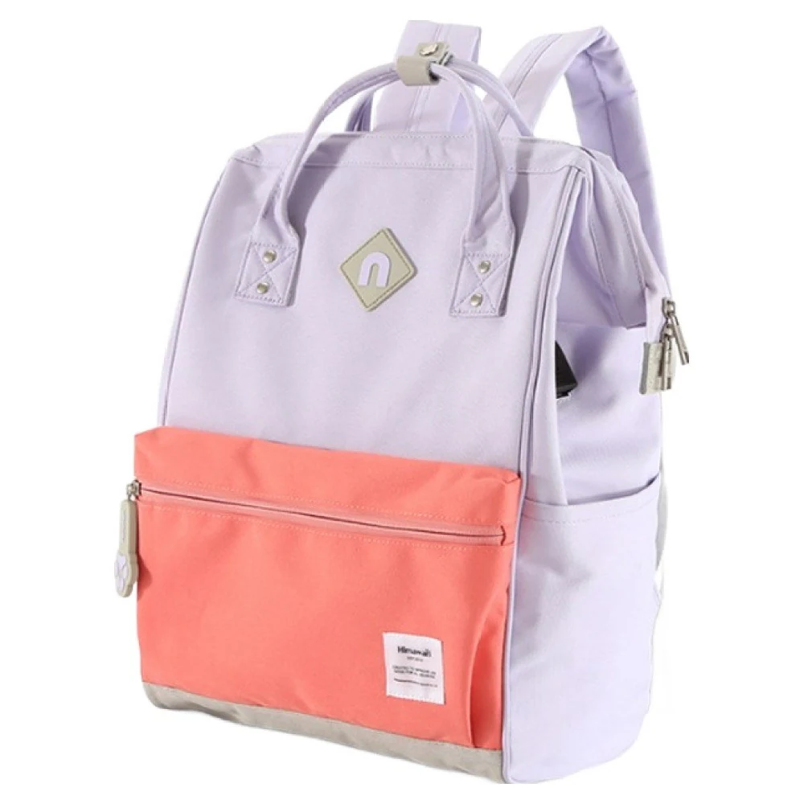
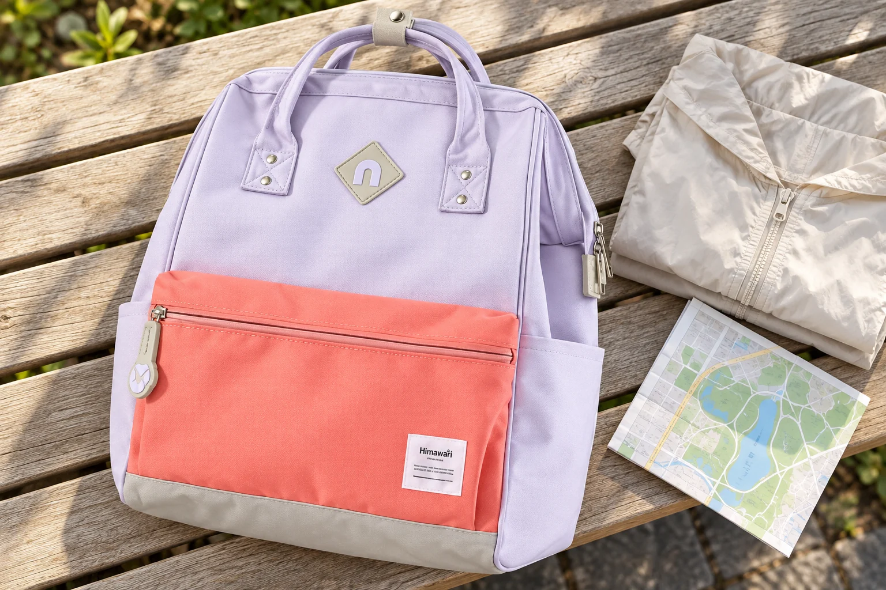

일상 백팩을 산에서도 쓰려면, 수납량 말고 무엇을 봐야 할까

평일에 쓰는 백팩을 주말 산책에도 메고 나가고 싶을 때가 있습니다. 물과 겉옷이 들어가니 산에서도 쓰면 되겠다고 생각하기 쉽습니다. 그런데 같은 짐이 들어가더라도 가방을 오래 메는 길과 자주 내려놓는 외출은 다릅니다. 일상용과 산행용 사이에서 고르려면 수납을 확인한 다음 그 짐을 어떻게 지고 걸을지까지 비교해야 합니다.
히마와리 No.9004 라벤더 코랄을 일상 백팩의 예로 놓고 보겠습니다. 실제 앞면에는 라벤더색 몸판과 코랄색 지퍼 포켓, 위쪽 손잡이 두 개가 보입니다. 마음에 드는 배색을 산책에서도 쓰고 싶다는 선택은 자연스럽습니다. 이 글에서는 산행에 필요한 구조가 이 모델에 갖춰졌다고 가정하지 않고 어떤 외출까지 겸용을 검토할지 따져봅니다.

공원 길을 잠깐 걷는 날이라면
가령 카페에 들렀다가 공원의 포장된 길을 걷고 돌아오는 일정이라면 평소 백팩부터 살펴볼 수 있습니다. 가져갈 물건이 많지 않고 가방을 메는 시간도 짧다면, 이미 익숙한 입구와 포켓을 그대로 쓰는 편의를 선택할 여지가 있습니다. 야외에 나간다는 이유만으로 가방을 하나 더 살 필요가 생기지는 않습니다.
여기서 비교할 장점은 익숙함입니다. 지갑을 둔 곳을 알고 잠시 앉았을 때 손잡이를 잡아 옮기는 동작도 낯설지 않습니다. 반대로 산책을 위해 짐을 더했더니 평소보다 몸판이 뒤로 벌어지거나 어깨가 빨리 불편해진다면 겸용의 이점이 줄어듭니다. 출근길에 잘 쓰던 가방이라는 사실은 새로 더한 짐까지 편하게 지게 해준다는 보장이 되지 않습니다.
짧은 공원 보행과 하루 산행을 같은 ‘당일 외출’로 묶으면 이 차이가 가려집니다. 같은 날 집으로 돌아온다는 점보다 가방을 메고 있는 시간이 선택에 더 직접적일 수 있습니다. 쉬는 자리가 자주 있는 길인지, 중간에 짐을 줄이거나 맡길 곳 없이 계속 운반하는지도 함께 생각해볼 만합니다.
여러 시간 산길을 걷는다면 비교의 중심이 달라집니다
REI의 데이팩 선택 안내는 활동과 용량, 몸에 맞는지를 주요 선택 기준으로 제시합니다. 무엇을 넣을지만 정한 뒤 끝내지 않고 그 가방을 쓸 활동과 착용 조건을 함께 보라는 기준으로 읽을 수 있습니다.
식사와 여벌 옷까지 직접 지고 여러 시간 걸을 계획이라면 짐이 들어가는 후보 중에서 다시 골라야 합니다. 어깨에 닿는 부분이 편한지, 등판 길이가 자신의 상체에 맞는지, 몸을 움직일 때 가방이 어느 쪽으로 따라오는지 비교할 이유가 커집니다. 큰 가방으로 바꾸어 공간을 확보했더라도 몸에 맞지 않는 문제는 남습니다.
물건을 꺼내는 방식에서도 차이가 납니다. 한 번 자리에 앉아 점심을 꺼낼 때와 물이나 겉옷을 여러 번 꺼낼 때는 가방을 벗고 다시 메는 횟수가 다릅니다. 같은 앞포켓도 벤치 위에서 열기 편한지와 산길 옆에서 본체를 받친 채 다루기 쉬운지는 따로 살필 부분입니다. 자주 쓰는 물건 때문에 매번 큰 입구까지 열어야 한다면 수납량이 넉넉해도 선택이 망설여질 수 있습니다.
No.9004의 앞포켓은 사진에서 위치와 지퍼를 볼 수 있습니다. 이 정보만으로 물병을 멘 채 꺼낼 수 있다거나 겉옷을 바로 넣기 좋다고 말할 수는 없습니다. 자신이 반복할 동작이 어느 입구를 쓰는지 대조할 수 있어야 포켓의 위치가 선택 이유가 됩니다.
벨트가 보인다는 말만으로 지지력을 비교하지 않기
산행용 후보를 살피다 보면 허리벨트나 내부 프레임이라는 설명을 만납니다. REI 안내는 일부 데이팩의 내부 프레임과 허리벨트를 소개하며 하중을 지지하고 몸에 맞추는 구조를 설명합니다. 이런 항목은 포켓 개수와 다른 비교 대상입니다. 같은 양의 짐을 어디로 받치고 몸에 어떻게 붙일지에 관한 정보입니다.
허리에 둘러 잠그는 가는 끈이 있다는 사실과 하중을 엉덩이 쪽으로 받치도록 설계한 허리벨트는 같은 의미로 읽기 어렵습니다. 벨트의 폭만 보고 판정하기보다 제조사가 설명한 역할과 등판에 연결되는 구조, 본인에게 맞는 조절 범위를 함께 봅니다. 가슴 앞에서 잠그는 끈도 허리벨트와 맡는 역할이 같다고 묶지 않습니다.

No.9004의 앞면 사진은 이런 지지 구조의 유무를 판정할 자료가 아닙니다. 사진 뒤쪽에 어깨끈 일부가 보이더라도 등판 전체나 허리 주변의 구성을 읽을 수는 없습니다. 산행용 후보에 관련 설명이 자세히 적혀 있고 일상용 후보에는 없다면, 그 차이를 기능이 없다는 증거로 옮기기보다 비교에 필요한 자료가 어느 쪽에 갖춰졌는지부터 구분합니다.
오래 지고 걸을 짐이 있을 때에는 설명이 비어 있는 후보를 그대로 추천하기 어렵습니다. 등판과 끈의 구성, 실제 착용을 더 알아본 뒤 판단하거나 해당 활동을 위한 구조를 제시한 다른 후보와 비교할 수 있습니다. 산행용이라는 이름도 몸에 맞는지 확인하는 과정을 대신하지는 않습니다.
No.9004의 숫자로 정할 수 있는 범위
No.9004의 외부 크기는 가로 28 × 세로 40 × 폭 17cm이며 제품표의 무게는 750g입니다. 겉감과 안감은 폴리에스터로 안내됩니다. 외부 치수는 몸 밖으로 나오는 가방의 규모를 비교할 때 쓸 수 있지만 실제 수납 용량을 리터로 알려주는 수치는 아닙니다. 식사와 겉옷이 들어갈지 역시 각 물건의 형태와 입구, 내부 공간을 대조해야 합니다.
750g이라는 무게만으로 오래 걸어도 편하다고 정할 수도 없습니다. 내용물을 담은 뒤의 무게가 달라지고 같은 총무게라도 몸에 닿는 자리와 가방의 움직임은 제품과 착용자에 따라 달라집니다. 빈 가방이 더 가볍다는 장점과 필요한 짐을 지지하는 구조는 각각 비교할 항목으로 남습니다. 소재 이름 역시 착용감이나 산행 적합성을 확인한 결과가 아닙니다.
이 모델의 배색과 앞면 수납이 마음에 든다면 일상에서 쓸 이유로 남겨두면 됩니다. 그 호감을 근거로 산행 기능까지 기대할 필요는 없습니다. 짧은 산책에 필요한 짐과 착용이 맞으면 겸용을 검토할 수 있고 산길에서 오래 지고 걸을 조건이 늘어나면 선택 기준을 더 엄격하게 잡을 수 있습니다.
두 활동에서 원하는 것이 갈린다면
일상에서는 자주 쓰는 물건을 익숙한 포켓에서 찾는 편의가 우선인데, 산에서는 늘어난 짐을 오래 지는 일이 더 부담스러울 수 있습니다. 그때는 하나의 백팩으로 모두 해결하려는 조건을 풀어도 됩니다. 일상용을 계속 쓰면서 산행에는 다른 가방을 고르면 구매와 보관 부담은 늘지만 매일 쓰는 가방의 형태를 산행 기준에 맞춰 바꿀 필요는 줄어듭니다.
반대로 걷는 시간이 짧고 짐도 적어 실제 착용에 무리가 없다면 두 가방을 나누는 이점이 작을 수 있습니다. 모든 산책에 전문 팩을 붙이는 규칙도, 당일이면 일상 백팩으로 충분하다는 규칙도 만들기 어렵습니다. 자신이 고르는 길에서 얼마나 오래 메고 어떤 무게를 받치고 몇 번 열고 다시 멜지를 놓고 보면 겸용을 이어갈지 후보를 나눌지 판단할 근거가 남습니다.